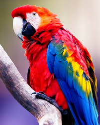
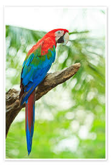
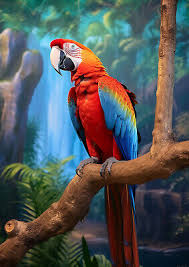

tabbytha thhe cat



Meet Dodo
Dodo is a colorful tropical parrot with a loud voice and a big personality! He’s smart, silly, and full of energy. You’ll always know when he’s around—he loves to whistle, squawk, and even try to copy a few words.
Dodo enjoys flying around, chewing on his toys, and dancing when he hears music. He’s super curious and loves to be part of whatever you’re doing—especially if snacks are involved.
He can be a little sassy sometimes, but he’s also very loving once he trusts you. Dodo needs lots of attention, space to play, and someone who doesn’t mind a little noise.
If you’re looking for a fun, chatty bird to brighten your day, Dodo is ready to be your new feathered friend!